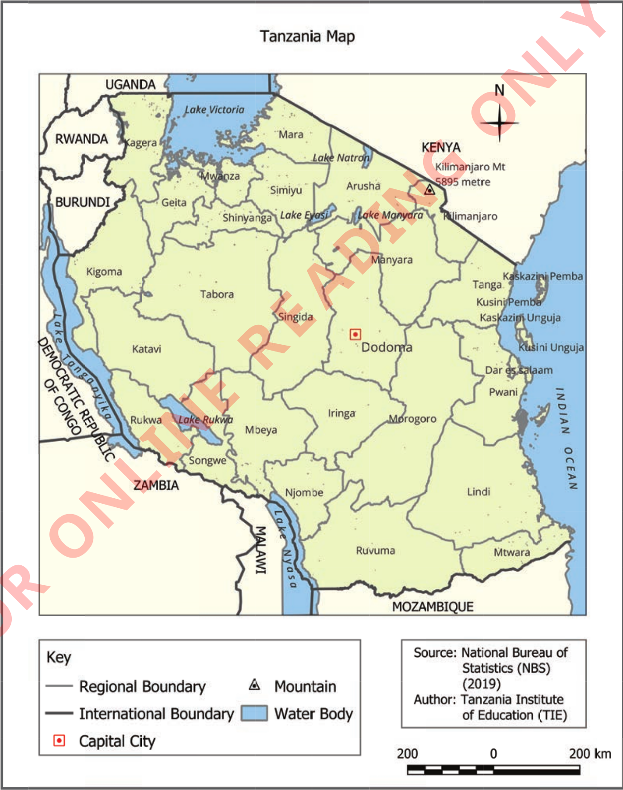

Section D: Map reading
Examine the following map then answer the questions that follow:

Figure 30:
Map of Tanzania presenting administrative boundaries
19.
Which side of Tanzania is the Mtwara Region located?
20.
Name the regions bordering the Dodoma Region to the East, West, South, and North.
21.
Which regions border Lake Tanganyika?
22.
Which lake is located in the southern part of Tanzania?
23.
In which direction is Lake Victoria located in Tanzania?
24.
Where is the capital city of Tanzania?
25.
What does Tanzania border on the eastern side?